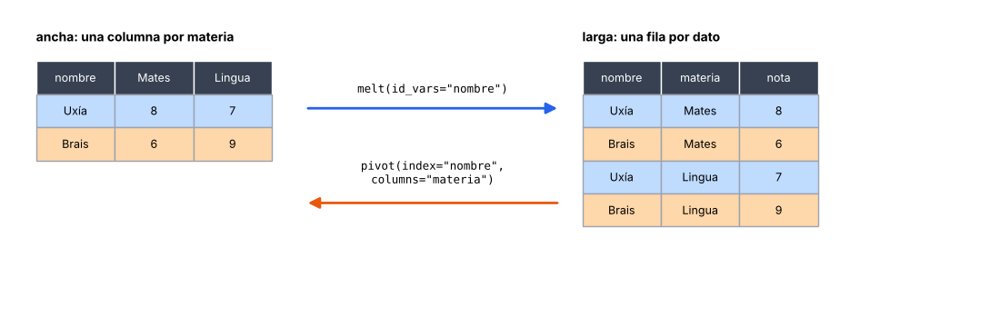
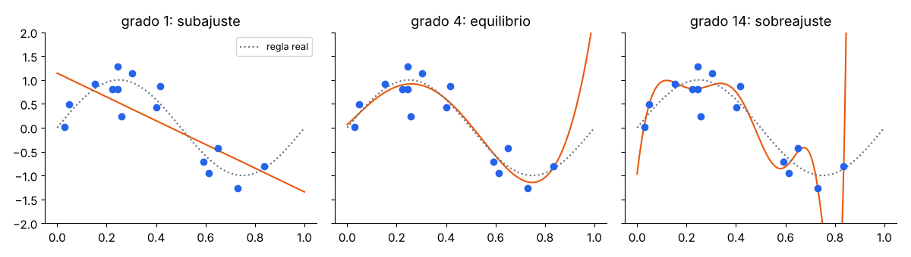

Análisis de datos con Python: de los datos al modelo
Cinco bloques que recorren el ciclo de vida de los datos: conseguirlos, entenderlos, prepararlos, usarlos para predecir y publicarlos. Es el puente entre la programación de la UD2 (E18–E27) y el aprendizaje automático de la UD5.
De dónde sale este itinerario. La estructura en cuatro bloques sigue la del módulo «Análisis de datos (AD)» publicado en mp5101-ad.vercel.app: adquisición y manejo de datos, EDA, limpieza y normalización, y modelado y predicción. Aquí está adaptado al nivel y a los criterios de Tecnoloxías Intelixentes. Los textos, ejemplos y ejercicios son propios, y se enlaza al original para quien quiera ampliar.
Una diferencia de enfoque. Ese módulo prohíbe entregar código generado por IA. En nuestra materia la IA conversacional sí se usa para generar código, como dice la programación. A cambio, cada línea se entiende, se ejecuta, se comprueba y se explica. En las prácticas de este itinerario se pide siempre el prompt usado y una explicación propia del resultado.
Mapa del itinerario
| Bloque | Pregunta | Criterios | Ejercicios | Teoría | Libro de Puentes |
|---|---|---|---|---|---|
| 1 · Adquirir | ¿De dónde salen los datos y cómo los leo y guardo? | CA1.2, CA1.3, CA5.1 | E18–E20, E25 | Secc. 7 · 9 · 14.10–14.11 | 15.3 |
| 2 · Explorar (EDA) | ¿Qué cuentan los datos? | CA5.1, CA5.7 | E21–E24, E26 | Secc. 6 · 8 · 14.5–14.6 | 15.3 |
| 3 · Limpiar y normalizar | ¿Están listos para un modelo? | CA5.2, CA5.3 | E25, E27 | Secc. 9 · 14.4 | 15.3 |
| 4 · Modelar y predecir | ¿Puedo predecir y cuánto me equivoco? | CA5.4–CA5.7 | — (UD5) | Secc. 10 · 14.4 | 14, 16 |
| 5 · Publicar | ¿Cómo lo usa otra persona? | CA5.7 | Proyecto | 13.7 | — |

ADQUIRIR ──► EXPLORAR ──► LIMPIAR Y NORMALIZAR ──► MODELAR ──► COMUNICAR
CSV, JSON, medidas, nulos, duplicados, entrenar, gráficos,
SQLite, API gráficos, tipos, escalado, evaluar, informe,
correlación codificación ajustar app (Streamlit)
▲ │
└──────────── nuevas preguntas, nuevos datos ◄───────────────┘El ciclo completo: antes y después del código
Los cinco bloques de esta página son la parte técnica del trabajo. Un proyecto real tiene una fase antes y otra después, y las empresas suelen seguir un esquema parecido a CRISP-DM (1999–2000): comprender el problema, comprender los datos, prepararlos, modelar, evaluar y desplegar, volviendo atrás cuando hace falta.

- Antes: entender el problema. ¿Qué decisión se quiere mejorar? ¿Cómo sabremos que funciona (qué métrica, qué valor mínimo)? ¿Hace falta un modelo o basta con una tabla o una regla? ¿Qué pasa si se equivoca, y a quién perjudica? Un proyecto que se salta esta fase suele acabar con un modelo bueno que resuelve un problema que nadie tenía.
- Después: vigilar y mejorar. Un modelo publicado se estropea con el tiempo porque el mundo cambia (deriva): hay que medir sus errores con datos nuevos, reentrenarlo y retirarlo si deja de servir. Está en la UD5, sección 11 y en la teoría 13.7.
Quién hace cada parte. Los nombres de los puestos cambian de una empresa a otra, pero estos cuatro perfiles son los más habituales:
| Perfil | Qué hace | Herramientas típicas | En esta web |
|---|---|---|---|
| Análisis de datos | Responde preguntas con datos ya disponibles: informes, gráficos, cuadros de mando | SQL, hojas de cálculo, Pandas, Power BI o Tableau | Bloques 1–2 |
| Ingeniería de datos | Construye y mantiene los «tubos» por los que llegan los datos: recogida, limpieza automática, almacenes | SQL, Python, Spark, bases de datos, programación de tareas | Bloques 1 y 3; Big Data |
| Ciencia de datos | Plantea hipótesis, construye y evalúa modelos | Python, scikit-learn, estadística | Bloque 4 y UD5 |
| Ingeniería de ML (y MLOps) | Lleva el modelo a producción y lo vigila: API, versiones, reentrenamiento | Python, Docker, servicios en la nube, Git | Bloque 5 y teoría 14.19 |
En un equipo pequeño (o en un trabajo de clase) una sola persona hace todo. Lo que tienen en común: programación, algo de estadística, conocer el ámbito (sanidad, comercio, educación...) y saber contar los resultados a quien no es especialista.
Ojo con «decidir con datos siempre es mejor». Muchas infografías comparan la decisión «tradicional» (intuición) con la «basada en datos» (más rápida, más precisa, más fiable). Decidir con datos es mejor si los datos son buenos, representan a toda la población y miden lo que importa. Con datos sesgados o incompletos se toman malas decisiones más deprisa y con apariencia de objetividad. Y hay cosas importantes que no se miden bien con números.
Todos los ejemplos usan un mismo dataset inventado de pedidos de una tienda online que se genera con el propio código, así se pueden ejecutar en Colab sin descargar nada.
Bloque 1 · Adquirir y manejar datos
1.1 El entorno de trabajo
| Opción | Cuándo | Cómo |
|---|---|---|
| Google Colab | En clase y en casa, sin instalar nada | Cuenta del centro; las librerías principales ya vienen instaladas |
| Jupyter en el ordenador | Proyectos con ficheros propios | pip install notebook pandas matplotlib seaborn scikit-learn |
Entorno virtual (venv) |
Separar las librerías de cada proyecto | python -m venv .venv y activarlo antes de instalar (teoría 14.10) |
1.2 Leer y escribir en distintos formatos
| Formato | Leer | Escribir | Ideal para |
|---|---|---|---|
| CSV | pd.read_csv("f.csv", sep=";", encoding="utf-8") |
df.to_csv("f.csv", index=False) |
Tablas sencillas, datos abiertos |
| Excel | pd.read_excel("f.xlsx", sheet_name="Hoja1") |
df.to_excel("f.xlsx", index=False) |
Hojas de cálculo de la administración o del centro |
| JSON | pd.read_json("f.json") o json.load() |
df.to_json("f.json", orient="records") |
Respuestas de APIs web |
| SQLite | pd.read_sql("SELECT …", con) |
df.to_sql("tabla", con) |
Varias tablas relacionadas, consultas |
| API web | requests.get(url).json() |
— | Datos actualizados (tiempo, transporte) |
import numpy as np, pandas as pd, sqlite3
# Dataset de ejemplo: 200 pedidos con algunos huecos y 3 filas repetidas
rng = np.random.default_rng(7)
n = 200
df = pd.DataFrame({
"id": range(1, n + 1),
"fecha": pd.date_range("2026-01-01", periods=n, freq="D").strftime("%Y-%m-%d"),
"categoria": rng.choice(["Libros", "Música", "Deporte", "Hogar"], n),
"cantidad": rng.integers(1, 6, n),
"precio_unitario": rng.normal(20, 6, n).round(2),
"edad": rng.integers(16, 70, n).astype(float),
})
df["total"] = (df["cantidad"] * df["precio_unitario"]).round(2)
df.loc[rng.choice(n, 12, replace=False), "edad"] = np.nan # huecos
df = pd.concat([df, df.iloc[:3]], ignore_index=True) # duplicados
df.to_csv("pedidos.csv", index=False) # CSV
df.to_json("pedidos.json", orient="records", force_ascii=False) # JSON
con = sqlite3.connect("tienda.db") # base de datos en un archivo
df.to_sql("pedidos", con, if_exists="replace", index=False)
print(pd.read_sql("""SELECT categoria, ROUND(SUM(total), 2) AS ventas
FROM pedidos GROUP BY categoria ORDER BY ventas DESC""", con))
con.close()1.3 Validar lo que se ha leído
Antes de analizar, hay que comprobar cuántas filas hay, qué falta, qué se repite y si hay valores imposibles:
def validar(df):
return {
"filas": len(df),
"nulos_%": (df.isnull().mean() * 100).round(1)[lambda s: s > 0].to_dict(),
"duplicados": int(df.duplicated().sum()),
"precios_negativos": int((df["precio_unitario"] < 0).sum()),
}
print(validar(pd.read_csv("pedidos.csv")))
# {'filas': 203, 'nulos_%': {'edad': 5.9}, 'duplicados': 3, 'precios_negativos': 0}1.4 Recoger datos de la web: vigilar páginas y scraping
Muchos datos útiles no están en un CSV ni en una API: están en páginas web pensadas para personas. Hay dos formas de recogerlos automáticamente:
| Vigilar cambios | Scraping (extraer datos) | |
|---|---|---|
| Qué hace | Mira una página cada cierto tiempo y avisa si algo cambia | Recorre páginas y extrae datos concretos a una tabla |
| Ejemplo | Saber cuándo baja un precio o aparece un aviso nuevo | Lista de horarios de todos los museos de Galicia |
| Herramienta abierta | changedetection.io (licencia Apache 2.0): avisa por correo, Telegram o webhook | Scrapling (licencia BSD-3): sigue encontrando los datos aunque la web cambie su diseño |
| En Python | requests + comparar una huella (hash) del
contenido |
requests + BeautifulSoup, o Scrapling |
La idea de un vigilante de cambios, en pocas líneas. Se guarda una huella del texto visible de la página (un hash: si cambia una sola letra, la huella cambia por completo) y se compara con la anterior:
import hashlib, difflib, re
def bloques(html):
"""Lista de textos visibles de la página, uno por etiqueta."""
return [t.strip() for t in re.findall(r">([^<]+)<", html) if t.strip()]
def huella(html):
return hashlib.sha256("\n".join(bloques(html)).encode()).hexdigest()[:12]
ayer = "<h1>Avisos</h1><p>Lunes: excursión a Vigo</p><p>Precio del libro: 24 €</p>"
hoy = "<h1>Avisos</h1><p>Lunes: excursión a Vigo</p><p>Precio del libro: 21 €</p><p>Martes: no hay clase</p>"
if huella(ayer) != huella(hoy):
print("La página ha cambiado:")
for linea in difflib.ndiff(bloques(ayer), bloques(hoy)):
if linea[0] in "+-":
print(" ", linea)
# La página ha cambiado:
# - Precio del libro: 24 €
# + Precio del libro: 21 €
# + Martes: no hay claseEn la práctica, ayer y hoy serían
requests.get(url).text guardados en días distintos.
changedetection.io hace exactamente esto, pero con una interfaz web,
filtros para vigilar solo una parte de la página y avisos
automáticos.
⚖️ Ética y legalidad del scraping. Que una página se pueda leer no significa que se pueda recoger en masa:
- Mira primero si hay una API o datos abiertos. Es la vía prevista y la más estable.
- Lee los términos de uso de la web: muchos prohíben la extracción automática.
- Respeta
robots.txt: es el archivo en el que la web indica qué partes no quiere que lean los programas.- No la satures: espera unos segundos entre peticiones e identifícate.
- Datos personales, no: nombres, teléfonos o correos de personas están protegidos por el RGPD aunque estén publicados. Recogerlos para otro fin necesita una base legal.
- No esquives protecciones. Algunas librerías (Scrapling, entre ellas) incluyen funciones para burlar los sistemas antibots. Si una web se protege, es que no quiere que la recojan así.
Python trae un lector de robots.txt que dice si una
dirección está permitida:
from urllib import robotparser
reglas = """User-agent: *
Disallow: /privado/
Disallow: /buscar
Crawl-delay: 10
User-agent: GPTBot
Disallow: /
"""
rp = robotparser.RobotFileParser()
rp.parse(reglas.splitlines()) # con una web real: rp.set_url(".../robots.txt"); rp.read()
print(rp.can_fetch("MiBotDeClase", "https://ejemplo.org/noticias/1")) # True
print(rp.can_fetch("MiBotDeClase", "https://ejemplo.org/privado/notas")) # False
print(rp.can_fetch("GPTBot", "https://ejemplo.org/noticias/1")) # False: este robot lo tiene todo prohibido
print(rp.crawl_delay("MiBotDeClase")) # 10 segundos entre peticionesFíjate en la última regla: cada vez más webs bloquean a los robots que recogen texto para entrenar modelos de IA. Es una de las discusiones abiertas sobre de dónde salen los datos de los LLM (UD4).
1.5 Validar con reglas: Pydantic
En 1.3 comprobamos los datos a mano: contar nulos, buscar precios negativos… Funciona, pero cada regla está escondida en el código. Pydantic (licencia MIT, versión 2) permite escribir las reglas una sola vez, como una ficha de cómo debe ser cada dato, y que la librería las compruebe y explique los errores. Es una de las librerías más usadas de Python: la emplean FastAPI (teoría 13.7) y muchas herramientas de IA.
La idea es una clase que describe un registro. Cada atributo lleva su tipo y, si hace falta, sus límites:
from typing import Literal
from pydantic import BaseModel, Field, ValidationError, field_validator
class Respuesta(BaseModel): # una respuesta de la encuesta de clase
edad: int = Field(ge=12, le=99) # ge: mayor o igual · le: menor o igual
concello: str
horas_ia: float = Field(ge=0, le=24)
usa_para: Literal["estudiar", "ocio", "traballo", "non a uso"] # solo estos valores
@field_validator("concello") # regla propia: limpiar el texto
@classmethod
def limpiar(cls, v):
return v.strip().title()
filas = [
{"edad": "17", "concello": " marín ", "horas_ia": "2.5", "usa_para": "estudiar"},
{"edad": 230, "concello": "Bueu", "horas_ia": 1, "usa_para": "estudiar"},
{"edad": 16, "concello": "Vigo", "horas_ia": -3, "usa_para": "deberes"},
]
validas = []
for i, f in enumerate(filas, 1):
try:
validas.append(Respuesta(**f))
except ValidationError as e:
for err in e.errors():
print(f"fila {i}: {err['loc'][0]} -> {err['msg']}")
print(validas[0])
# fila 2: edad -> Input should be less than or equal to 99
# fila 3: horas_ia -> Input should be greater than or equal to 0
# fila 3: usa_para -> Input should be 'estudiar', 'ocio', 'traballo' or 'non a uso'
# edad=17 concello='Marín' horas_ia=2.5 usa_para='estudiar'Qué ha pasado:
- Convierte lo que puede: el texto
"17"pasa a ser el número 17 y"2.5"a 2,5. Los datos que llegan de un CSV, de un formulario o de una API son casi siempre texto. - Limpia con las reglas propias:
" marín "→"Marín". - Rechaza lo imposible y dice exactamente qué campo falla y por qué, aunque haya varios errores en la misma fila.
- El resultado es un objeto con atributos
(
validas[0].edad) que se convierte en diccionario con.model_dump(), listo para un DataFrame.
| Comprobar a mano (1.3, E14) | Pandas (isna, describe) |
Pydantic | |
|---|---|---|---|
| Las reglas están… | dispersas en if |
en cada consulta | en un solo sitio (la clase) |
| Mejor para | aprender | explorar tablas enteras | validar registro a registro: formularios, APIs, respuestas de IA |
| Errores | los que programes | no los explica | mensaje por campo |
Ojo con la versión. Mucho material de internet, y a veces el código que genera una IA, está escrito para Pydantic 1, que funciona distinto:
.dict()en vez de.model_dump(),@validatoren vez de@field_validator… Si un ejemplo da errores raros, comprueba la versión conimport pydantic; print(pydantic.VERSION).
Lo que Pydantic no hace: revisa cada fila por separado, así que no detecta duplicados ni problemas que solo se ven mirando la tabla entera (una media rara, una categoría que casi no aparece). Para eso sigue haciendo falta Pandas y el EDA del bloque 2.
1.6 Dónde encontrar datos: más allá de Kaggle
Kaggle es muy cómodo para aprender, pero tiene un problema: todo el mundo usa los mismos conjuntos de datos (el Titanic, los pingüinos, las casas de Boston…), así que los proyectos se parecen mucho y las respuestas ya están publicadas. Un proyecto con datos propios o poco usados obliga a pensar de verdad: qué significa cada columna, qué falta, qué pregunta se puede responder.
Buscadores y repositorios generales
| Fuente | Qué tiene | Para qué nos sirve |
|---|---|---|
| Google Dataset Search | Un buscador de conjuntos de datos publicados en toda la web | Primer paso: buscar «calidade do aire Galicia» o «precio vivienda España» y ver quién publica datos |
| UCI Machine Learning Repository | Conjuntos clásicos de aprendizaje automático, pequeños y bien documentados | Practicar clasificación y regresión (UD5); se cargan desde Python
con el paquete ucimlrepo |
| Hugging Face Datasets | Texto, imágenes y audio preparados para IA, muchos en gallego y castellano | UD3 (visión) y UD4 (lenguaje): reseñas, traducciones, voz |
| AWS Open Data Registry | Conjuntos enormes (imágenes de satélite, genómica, clima) alojados en la nube de Amazon | Ver qué es el Big Data real (teoría, sección 11); demasiado grandes para el aula |
Organismos públicos e internacionales
| Fuente | Qué tiene | Para qué nos sirve |
|---|---|---|
| Our World in Data | Series largas de salud, clima, energía, población y educación, con gráficos y CSV de cada uno | Comparar países y épocas; cada gráfico se descarga con un enlace |
| OMS · Global Health Observatory | Estadísticas sanitarias de todos los países: esperanza de vida, vacunación, mortalidad | Proyectos de salud; tiene una API pública |
| Banco Mundial · Open Data | Economía y desarrollo: PIB, educación, acceso a internet… por país y año | Relacionar dos indicadores (¿más internet, más años de escolarización?) |
| NASA Open Data | Ciencias del espacio y de la Tierra: temperatura, hielo, asteroides, imágenes | Proyectos de clima y astronomía; enlaza con Física y con Bioloxía |
| Data.gov (EE. UU.) · Data.gov.in (India) | Portales de datos abiertos de esos gobiernos | Ejemplos de cómo publica datos otro país; para temas locales, mejor los de abajo |
Datos de aquí (los más útiles para un proyecto de clase, porque el alumnado conoce el contexto y puede comprobar si un resultado tiene sentido):
| Fuente | Qué tiene |
|---|---|
| abertos.xunta.gal | Catálogo de datos abiertos de la Xunta: educación, transporte, medio ambiente, turismo |
| IGE · Instituto Galego de Estatística | Población, economía y sociedad por concello |
| MeteoGalicia | Tiempo, clima y calidad del aire de Galicia |
| datos.gob.es | Catálogo nacional que reúne datos de ministerios, comunidades y ayuntamientos |
| INE | Estadística oficial de España: padrón, empleo, precios, encuestas |
| Eurostat | Estadística de la Unión Europea, comparable entre países |
Cargar datos directamente desde Python (necesita conexión a internet; en Colab funciona tal cual):
import pandas as pd
# Our World in Data: cada gráfico tiene su CSV. El nombre sale de la URL del gráfico.
url = ("https://ourworldindata.org/grapher/co-emissions-per-capita.csv"
"?v=1&csvType=filtered&useColumnShortNames=true&country=ESP~PRT~FRA")
co2 = pd.read_csv(url, storage_options={"User-Agent": "IA-apuntes clase"})
print(co2.head()) # columnas: entity, code, year y el indicador
# UCI: pip install ucimlrepo
from ucimlrepo import fetch_ucirepo
vino = fetch_ucirepo(id=186) # Wine Quality (calidad del vino)
X, y = vino.data.features, vino.data.targets
print(X.shape, vino.metadata.num_instances)
# Hugging Face: pip install datasets
from datasets import load_dataset
resenas = load_dataset("stanfordnlp/imdb", split="train[:1%]") # una muestra pequeña
print(resenas[0]["text"][:200], resenas[0]["label"])Algunos portales bloquean las descargas que no dicen quién las pide;
por eso se pasa un User-Agent a read_csv.
Antes de usar un conjunto de datos, se comprueba siempre:
- Quién lo publica y cómo se recogieron los datos.
- La licencia: muchos son CC BY (se pueden usar citando la fuente), otros no permiten uso comercial.
- La fecha y cada cuánto se actualiza.
- Qué significa cada columna y en qué unidades está (toneladas, euros de qué año, por cada 100 000 habitantes…).
- Si tiene datos personales: en ese caso, anonimizar (CA5.2) o descartarlo.
Sobre la lista original. La idea de esta sección viene de una publicación de Instagram que recomienda diez fuentes «para dejar de usar Kaggle», y que para dar los enlaces pide comentar una palabra y seguir la cuenta. Los enlaces de arriba son los oficiales: no hace falta pedirlos a nadie. Añadimos las fuentes gallegas, españolas y europeas, que la lista no traía.
Ejercicios del bloque 1
D1.1 · Arrays con NumPy 🟢 (E18): crea un vector del
1 al 10, una matriz 3×3 de ceros, otra 2×4 de unos, los pares del 2 al
20, una identidad 4×4, cinco valores entre 0 y 1 equiespaciados y seis
enteros aleatorios entre 0 y 10 con semilla. Muestra shape,
ndim y dtype de cada uno. Pista:
np.arange, np.zeros, np.ones,
np.eye, np.linspace,
np.random.default_rng(42).integers.
D1.2 · Del CSV a la base de datos 🟡 (E20): guarda
pedidos.csv en una tabla SQLite y responde con una
consulta SQL y con Pandas: ¿qué categoría
vende más?, ¿cuál es el pedido más caro?, ¿cuántos pedidos hay por mes?
Comprueba que los dos caminos dan lo mismo. Pista:
GROUP BY, ORDER BY … DESC LIMIT 1,
strftime('%m', fecha); en Pandas, groupby,
idxmax, .dt.month.
D1.3 · Datos abiertos de Galicia 🟡 (CA5.1):
descarga un CSV de abertos.xunta.gal o del portal de
tu concello. Indica la fuente, la licencia, la fecha, cuántas filas y
columnas tiene y qué significa cada columna. Pasa la función
validar y comenta lo que encuentres.
D1.4 · Una API del tiempo 🔴: consulta Open-Meteo para tu localidad (latitud
y longitud), convierte la respuesta JSON en un DataFrame con la
temperatura por horas y guárdala en CSV. ¿Qué pasa si no hay conexión?
Gestiónalo con try/except (teoría 14.10).
D1.5 · Mi vigilante de cambios 🟡: adapta el código
de 1.4 para que lea una página real que puedas vigilar
(la de avisos de tu concello o la web del instituto), guarde la huella
en un archivo y, al ejecutarlo otra vez, diga qué ha cambiado. Antes de
empezar, comprueba con robotparser que esa página está
permitida y anótalo. Pista:
requests.get(url, timeout=10).text, guardar con
open("huella.txt", "w"), y time.sleep() si
haces varias peticiones.
D1.6 · ¿Se puede recoger? 🟡 (CA5.2, debate): para cada caso, decide si es legítimo recogerlo de forma automática y justifícalo con los seis puntos del cuadro de ética: a) los precios de un supermercado en línea para comparar la cesta de la compra; b) los nombres y teléfonos de todos los fontaneros de un directorio para venderles un servicio; c) la temperatura diaria de MeteoGalicia para un proyecto de clase; d) las reseñas de un restaurante para analizar su sentimiento (UD4); e) todos los textos de una red social para entrenar un modelo de lenguaje.
D1.7 · Las reglas de un pedido 🔴 (CA5.2): escribe
una clase Pedido de Pydantic para las filas de
pedidos.csv (1.2) con estas reglas: id
positivo; fecha como fecha de verdad;
categoria solo una de las cuatro; cantidad
entre 1 y 100; precio_unitario mayor que 0;
edad opcional (puede faltar) entre 14 y 110; y que
total sea igual a cantidad × precio_unitario.
Valida todas las filas y cuenta cuántas son válidas. Después
estropea a propósito dos filas (un total que no cuadre
y una categoría inventada) y comprueba que las detecta. ¿Detecta los 3
duplicados? ¿Por qué? Pista:
from datetime import date;
edad: float | None = Field(default=None, ...); para una
regla que mira varios campos,
@model_validator(mode="after"). Pandas guarda los huecos
como NaN, no como None.
D1.8 · Mi propio conjunto de datos 🟡 (CA5.1,
CA5.2): elige una pregunta que te interese (por ejemplo, «¿ha subido la
temperatura media en Galicia en los últimos 50 años?» o «¿los países con
más acceso a internet tienen más años de escolarización?») y busca
dos fuentes distintas de la sección 1.6 que puedan
responderla, al menos una de ellas gallega, española o europea. Para
cada una, rellena una ficha: quién lo publica, licencia, fecha, número
de filas y columnas, unidades y si contiene datos personales. Carga la
que elijas en Pandas, pasa la función validar y justifica
por qué es mejor que un conjunto de Kaggle para tu pregunta.
Pista: empieza por Google Dataset Search con palabras en
gallego, castellano e inglés; mira siempre la pestaña o el apartado de
licencia antes de descargar.
Ampliar en el módulo AD: Unidad 1 →
Bloque 2 · Explorar los datos (EDA)
El análisis exploratorio es la fase en la que se entienden los datos antes de modelarlos: cómo se distribuyen, qué relaciones hay, qué valores son raros. Teoría completa en las secciones 6, 8 y 14.5–14.6.
2.1 Resumir con números
| Qué quiero saber | Medida | Pandas |
|---|---|---|
| Valor típico | Media, mediana, moda | mean(), median(), mode() |
| Cuánto varían | Rango, varianza, desviación típica, rango intercuartílico | max() - min(), var(), std(),
quantile(.75) - quantile(.25) |
| Posición | Percentiles y cuartiles | quantile([.25, .5, .75]) |
| Frecuencias | Conteos y proporciones | value_counts(normalize=True) |
| Por grupos | Agregados | groupby("categoria")["total"].agg(["mean", "sum", "count"]) |
| Relación entre numéricas | Correlación de Pearson (−1 a 1) | df.corr(numeric_only=True) |

Media frente a mediana. Si hay valores extremos (un pedido de 2000 €), la media se dispara y la mediana apenas cambia. Por eso, con datos asimétricos, como los sueldos o los precios de vivienda, se informa de la mediana.
2.2 Elegir el gráfico por la pregunta
| Pregunta | Gráfico | Código |
|---|---|---|
| ¿Cómo evolucionan las ventas cada mes? | Líneas con marcadores | ventas_mes.plot(marker="o") |
| ¿Cómo se distribuye la edad? ¿Hay atípicos? | Histograma + boxplot | sns.histplot(df, x="edad", kde=True) ·
sns.boxplot(df, x="edad") |
| ¿Cambia el precio según la categoría? | Boxplot por grupos | sns.boxplot(df, x="categoria", y="precio_unitario") |
| ¿Se relacionan cantidad y total? | Dispersión (+ recta) | sns.regplot(df, x="cantidad", y="total") |
| ¿Cuántos pedidos hay de cada tipo? | Barras de conteo | sns.countplot(df, y="categoria", order=df["categoria"].value_counts().index) |
| ¿Qué variables van juntas? | Mapa de calor | sns.heatmap(df.corr(numeric_only=True), annot=True, cmap="coolwarm", center=0) |

Interpretar siempre por escrito: debajo de cada gráfico, dos o tres frases con lo que se ve («las ventas bajan en agosto», «hay tres precios atípicos en Deporte»). Es lo que se evalúa en CA5.7.
Correlación no es causalidad. Que el helado y las quemaduras solares suban a la vez no significa que una cosa cause la otra: las dos dependen del calor.
Para elegir librería (Matplotlib, Seaborn, Plotly, Altair, Pygal) según dónde se va a ver el gráfico (papel, cuaderno o web), ver la teoría 12.3.
2.3 Datos con ubicación: mapas con GeoPandas
Muchos datos llevan dónde además de
qué: la parada de autobús, el recorrido de un río, el
límite de un concello. Son datos geoespaciales. GeoPandas amplía Pandas con una
columna especial, geometry, y con operaciones espaciales:
medir, dibujar mapas o saber qué puntos caen dentro de cada zona. Se
trabaja igual que con un DataFrame, así que todo lo del bloque 1
sirve.
| Geometría | Representa | Ejemplo |
|---|---|---|
Point |
Un lugar | Una parada, un sensor |
LineString |
Un camino | Una calle, un río |
Polygon |
Una zona cerrada | Un parque, un barrio |
MultiPoint / MultiPolygon |
Varios a la vez | Las estaciones de una red; un concello con islas, como Vigo con las Cíes |
El sistema de referencia (CRS) dice qué significan los números de cada coordenada. Es lo que más errores provoca:
| Código EPSG | Unidades | Para qué |
|---|---|---|
EPSG:4326 (WGS84) |
Grados de longitud y latitud | Guardar e intercambiar: es lo que da un GPS |
EPSG:3857 |
Metros, pero deformados | Mapas web (fondos tipo OpenStreetMap) |
EPSG:25829 (ETRS89 / UTM 29N) |
Metros reales | Medir en Galicia: el sistema oficial de la cartografía gallega y española |
Dos reglas de oro. 1)
Point(x, y)esPoint(longitud, latitud): primero la longitud. Si se cambian, Marín acaba en el océano Índico. 2) Para medir, proyectar. EnEPSG:4326un área sale en «grados cuadrados», que no significan nada; antes de calcular áreas o distancias hay que pasar a un CRS en metros conto_crs().
El flujo de trabajo es el de siempre, con un paso nuevo, fijar el CRS:
recoger ubicaciones ─► crear geometrías ─► GeoDataFrame ─► fijar CRS ─► explorar y dibujar ─► análisis espacial ─► interpretarEjemplo completo (coordenadas inventadas cerca de
Marín; no son lugares reales). En Colab, GeoPandas suele venir
instalado; en local, pip install geopandas.
import geopandas as gpd
import pandas as pd
import matplotlib.pyplot as plt
from shapely.geometry import Point, box
# 1. Puntos: un DataFrame normal + una columna de geometrías
lugares = pd.DataFrame({
"lugar": ["Cafetería", "Biblioteca", "Museo", "Polideportivo", "Praza"],
"tipo": ["Ocio", "Educación", "Cultura", "Deporte", "Ocio"],
"lon": [-8.700, -8.684, -8.676, -8.682, -8.705],
"lat": [42.395, 42.396, 42.386, 42.383, 42.384],
})
lugares = gpd.GeoDataFrame(
lugares,
geometry=gpd.points_from_xy(lugares["lon"], lugares["lat"]), # x = longitud
crs="EPSG:4326",
)
# 2. Polígonos: cuatro zonas rectangulares. box(min_x, min_y, max_x, max_y)
zonas = gpd.GeoDataFrame(
{"zona": ["A", "B", "C", "D"], "poboacion": [1200, 850, 1500, 1000]},
geometry=[box(-8.71, 42.39, -8.69, 42.40), box(-8.69, 42.39, -8.67, 42.40),
box(-8.71, 42.38, -8.69, 42.39), box(-8.69, 42.38, -8.67, 42.39)],
crs="EPSG:4326",
)
# 3. Medir: primero proyectar a metros (UTM 29N)
zonas_m = zonas.to_crs("EPSG:25829")
zonas["km2"] = (zonas_m.area / 1e6).round(2) # ≈ 1.83 km² cada zona
zonas["densidad"] = (zonas["poboacion"] / zonas["km2"]).round()
# 4. Mapa de coropletas (colorear zonas por un valor) con los puntos encima
fig, ax = plt.subplots(figsize=(8, 6))
zonas.plot(ax=ax, column="densidad", cmap="YlOrRd", legend=True,
edgecolor="black", legend_kwds={"label": "hab/km²"})
lugares.plot(ax=ax, color="navy", markersize=40)
for _, fila in lugares.iterrows():
ax.annotate(fila["lugar"], (fila.geometry.x, fila.geometry.y),
xytext=(4, 4), textcoords="offset points", fontsize=8)
ax.set_title("Densidad de población por zona (datos inventados)")
plt.show()
# 5. Unión espacial: ¿en qué zona cae cada lugar?
unidos = gpd.sjoin(lugares, zonas[["zona", "geometry"]], how="left", predicate="within")
print(unidos[["lugar", "zona"]]) # Cafetería A, Biblioteca B, Museo D, Polideportivo D, Praza C
print(unidos["zona"].value_counts()) # D tiene 2 lugares; A, B y C, 1
# 6. Distancias en metros desde la cafetería
lugares_m = lugares.to_crs("EPSG:25829")
origen = lugares_m.geometry.iloc[0]
print(lugares_m.distance(origen).round(-1)) # ≈ 0, 1320, 2210, 1990, 1290Comprobado a mano. En este entorno no se puede instalar GeoPandas, así que los resultados de los comentarios se han calculado aparte: qué punto cae en cada rectángulo, y áreas y distancias con la longitud real de un grado a esa latitud. Al ejecutarlo en Colab pueden variar en la última cifra.
Leer el mapa con criterio.
- Coropletas con tasas, no con totales. Si las zonas tienen tamaños distintos, colorear por número de habitantes engaña: la zona grande parece la importante solo por ser grande. Por eso el ejemplo colorea por densidad (habitantes por km²). En el ejemplo las cuatro zonas miden casi lo mismo, pero en concellos reales no pasa.
- Los bordes cuentan.
predicate="within"exige que el punto esté dentro; un punto justo sobre el límite no lo está.predicate="intersects"sí lo cuenta. Con límites reales (calles que separan barrios), esto cambia los recuentos (ejercicio D2.7). - La ubicación es un dato personal. Las coordenadas de dónde vive o por dónde se mueve una persona están protegidas por el RGPD. En clase, solo lugares públicos o puntos inventados; nunca ubicaciones del alumnado.
Dónde conseguir datos geográficos abiertos: el Centro de Descargas del
CNIG (límites municipales, carreteras), la información xeográfica de la Xunta y
los portales de datos abiertos de la sección 1.6. GeoPandas los lee con
gpd.read_file("archivo.geojson") (también
shapefile y GeoPackage).
2.4 Resumir con SQL: CTE, CASE y funciones de ventana
Muchos datos de empresas y administraciones están en bases de datos, y las preguntas del EDA se pueden responder directamente con SQL (en el bloque 1 se guardaron los pedidos en SQLite). Tres herramientas hacen las consultas mucho más potentes:
| Herramienta | Para qué | Equivale en Pandas a |
|---|---|---|
WITH nombre AS (...) (CTE) |
Dar nombre a un paso intermedio y usarlo después, como una variable | Guardar un resultado en un DataFrame |
CASE WHEN ... THEN ... ELSE ... END |
Crear categorías con condiciones | np.select o pd.cut |
función() OVER (PARTITION BY ... ORDER BY ...)
(ventana) |
Calcular por grupos sin juntar las filas: puesto, total acumulado, valor anterior | groupby(...).rank(), cumsum(),
shift() |
import sqlite3
con = sqlite3.connect(":memory:")
con.executescript("""
CREATE TABLE prestamos (alumno TEXT, curso TEXT, mes TEXT, libros INTEGER);
INSERT INTO prestamos VALUES
('Uxía','1A','2026-09',3), ('Uxía','1A','2026-10',5), ('Brais','1A','2026-09',4),
('Brais','1A','2026-10',4), ('Noa','1B','2026-09',6), ('Noa','1B','2026-10',2),
('Iago','1B','2026-09',1), ('Iago','1B','2026-10',5), ('Sara','1B','2026-10',5);
""")
consulta = """
WITH totales AS ( -- CTE: un paso intermedio con nombre
SELECT alumno, curso, SUM(libros) AS total
FROM prestamos GROUP BY alumno, curso
)
SELECT alumno, curso, total,
CASE WHEN total >= 8 THEN 'gran lector'
WHEN total >= 5 THEN 'lector'
ELSE 'ocasional' END AS perfil,
RANK() OVER (PARTITION BY curso ORDER BY total DESC) AS puesto,
ROW_NUMBER() OVER (PARTITION BY curso ORDER BY total DESC) AS fila
FROM totales ORDER BY curso, puesto, alumno;
"""
for fila in con.execute(consulta):
print(fila)
# ('Brais', '1A', 8, 'gran lector', 1, 1)
# ('Uxía', '1A', 8, 'gran lector', 1, 2)
# ('Noa', '1B', 8, 'gran lector', 1, 1)
# ('Iago', '1B', 6, 'lector', 2, 2)
# ('Sara', '1B', 5, 'lector', 3, 3)
# Total acumulado y cambio respecto al mes anterior (LAG)
for fila in con.execute("""
SELECT mes, SUM(libros) AS libros,
SUM(SUM(libros)) OVER (ORDER BY mes) AS acumulado,
SUM(libros) - LAG(SUM(libros)) OVER (ORDER BY mes) AS cambio
FROM prestamos GROUP BY mes"""):
print(fila)
# ('2026-09', 14, 14, None)
# ('2026-10', 21, 35, 7)RANKfrente aROW_NUMBER. Con un empate (Brais y Uxía, 8 libros),RANKda el mismo puesto a los dos y salta el siguiente (1, 1, 3);DENSE_RANKno salta (1, 1, 2);ROW_NUMBERnumera sin repetir, pero quién va primero en un empate no está garantizado. Para quedarse con «los 3 mejores de cada curso» hay que decidir qué hacer con los empates: conRANKpueden salir más de 3.LAGmira la fila anterior, no el mes anterior. Si a un alumno le falta un mes, compara con el último que tenga.- Cada base de datos tiene su dialecto.
DATE_TRUNC('month', fecha)existe en PostgreSQL, pero no en SQLite, donde se escribestrftime('%Y-%m', fecha). Las funciones de ventana están en SQLite desde la versión 3.25 (2018). - Las consultas se escriben en el orden
SELECT … FROM … WHERE … GROUP BY … HAVING … ORDER BY, pero se ejecutan en otro: primeroFROMyWHERE, despuésGROUP BYyHAVING, y al finalSELECTyORDER BY. Por eso un alias creado enSELECTno se puede usar enWHERE.
Indicadores (KPI). En una empresa, el análisis suele acabar en unos pocos números que se vigilan cada semana: tasa de conversión (compras / visitas), valor medio del pedido, tasa de abandono de clientes, margen… Un buen indicador está ligado a una decisión, tiene una fórmula clara y un periodo. Cuidado con dos trampas: las métricas de vanidad (visitas o «me gusta» que crecen pero no cambian ninguna decisión) y la ley de Goodhart: cuando un indicador se convierte en objetivo, la gente aprende a mejorar el número sin mejorar lo que medía (si se premia el número de préstamos de la biblioteca, aparecen préstamos que nadie lee).
Ejercicios del bloque 2
D2.1 · Ventas mensuales 🟢 (E23): con
pedidos.csv, calcula el total vendido por mes y
represéntalo con un gráfico de líneas con marcadores, título y ejes con
nombre. Justifica por qué es el gráfico adecuado. Pista:
pd.to_datetime, .dt.to_period("M"),
groupby, plot(marker="o").
D2.2 · Distribución de la edad 🟢 (E24): histograma con curva de densidad y boxplot de la edad. ¿Es simétrica? ¿Hay atípicos? Calcula media y mediana y explica la diferencia.
D2.3 · Precio por categoría 🟡 (E26): boxplot de
precio_unitario por categoria, ordenado de
menor a mayor mediana. ¿Qué categoría tiene más dispersión?
D2.4 · Relaciones 🟡 (E26): dispersión de
cantidad frente a total y de
precio_unitario frente a total con recta de
regresión, y mapa de calor de correlaciones. ¿Qué variable explica mejor
el total? ¿Te sorprende alguna correlación?
D2.5 · Informe EDA 🔴 (CA5.7): con un dataset de datos abiertos (D1.3), aplica el checklist de EDA y redacta un informe de 5 hallazgos, cada uno con su gráfico y su interpretación.
D2.6 · Mapa de mi concello 🟡 (CA5.7): crea cinco
puntos inventados y cuatro zonas rectangulares en tu concello (busca la
longitud y la latitud aproximadas en un mapa web). Calcula el área en
km² proyectando a EPSG:25829, dibuja un mapa de coropletas
de densidad con los puntos encima y escribe dos frases interpretando el
mapa.
D2.7 · Revisión crítica: los puntos del borde 🟡: en
un cuaderno publicado en redes, los lugares son
Cafe (75.80, 22.70), Library (75.82, 22.72),
Museum (75.84, 22.74) y
Hospital (75.86, 22.76), y las zonas son
North = box(75.78, 22.74, 75.82, 22.78),
South = box(75.78, 22.68, 75.82, 22.72),
East = box(75.84, 22.72, 75.88, 22.76) y
West = box(75.72, 22.72, 75.76, 22.76). Sin ejecutar nada:
a) ¿en qué zona cae cada lugar con predicate="within"? b)
¿Y con predicate="intersects"? c) ¿Qué le pasa a la zona
West? d) ¿Qué cambiarías en los datos para que el ejemplo enseñe bien la
unión espacial?
D2.8 · Grados no son metros 🔴: con las zonas de
D2.7, alguien escribe zonas.area y obtiene
0.0016 para cada una, junto con el aviso de GeoPandas
«Geometry is in a geographic CRS. Results from 'area' are likely
incorrect». Explica qué significa ese 0.0016, por qué no sirve y
cómo se arregla. ¿Qué área real tiene cada zona, aproximadamente?
Pista: las coordenadas están cerca de la longitud 75.8° E; esa
zona UTM es la 43N (EPSG:32643).
D2.9 · Préstamos con SQL 🟡 (CA5.1, CA5.7): con la
tabla prestamos de 2.4, escribe tres consultas: a) los dos
mejores lectores de cada curso, de forma que un empate no deje fuera a
nadie con el mismo número de libros; b) para cada alumno y mes, los
libros prestados y el cambio respecto a su mes anterior; c) el
porcentaje de libros de cada curso sobre el total. ¿Qué pasa con Sara en
el apartado b)? Pista: DENSE_RANK,
LAG(...) OVER (PARTITION BY alumno ORDER BY mes) y, para el
total de todos los grupos, SUM(SUM(libros)) OVER ().
Ampliar en el módulo AD: Unidad 2 →
Bloque 3 · Limpiar y normalizar
Un modelo es tan bueno como los datos con los que aprende (garbage in, garbage out). Esta fase se llama preprocesamiento.
3.1 Análisis preliminar y limpieza básica
| Problema | Cómo se detecta | Qué se hace |
|---|---|---|
| Valores nulos | df.isnull().sum(),
% = isnull().mean()*100 |
Eliminar la columna si falta casi todo; imputar con la mediana (numéricas), la moda (categóricas) o una regla (mediana por grupo) |
| Duplicados | df.duplicated().sum() |
drop_duplicates(), comprobando antes que de verdad son
repetidos |
| Tipos incorrectos | df.dtypes (una fecha como object, un
número como texto) |
pd.to_datetime(),
pd.to_numeric(errors="coerce"),
astype("category") |
| Texto desordenado | value_counts() muestra «Lugo», «lugo », «LUGO» |
str.strip().str.title(),
replace({...}) |
| Valores imposibles | describe(): edad 230, precio negativo |
Corregir si se sabe; si no, tratarlos como nulos |
| Memoria | df.memory_usage(deep=True) |
category para textos repetidos, tipos numéricos más
pequeños |
⚠️ Error típico con fechas: que
df.dtypesdigaobjecten una columna de fechas significa que no se ha leído como fecha. Hay que convertirla conpd.to_datetime()antes de usar.dt.month.
3.2 Transformar: agrupar, codificar y escalar
| Técnica | Para qué | Código |
|---|---|---|
| Agrupar por intervalos (binning) | Pasar un número a categorías | pd.cut(edad, [0, 25, 45, 65, 120], labels=[…]) (cortes
fijos) · pd.qcut(total, 4) (mismo número de filas por
grupo) |
| Codificación ordinal | Categorías con orden (bajo < medio < alto) | map({"bajo": 0, "medio": 1, "alto": 2}) u
OrdinalEncoder |
| One-hot | Categorías sin orden (Libros, Música…) | pd.get_dummies(df, columns=["categoria"]) u
OneHotEncoder |
| Normalización (min-max) | Llevar a la escala 0–1 | MinMaxScaler() |
| Estandarización (z-score) | Media 0 y desviación típica 1 | StandardScaler() |

¿Por qué escalar? Muchos modelos (KNN, SVM, redes neuronales) comparan distancias. Si una columna va de 0 a 100 000 € y otra de 1 a 5 habitaciones, la primera «manda» solo por su escala. Es el ejercicio E27.
import pandas as pd
from sklearn.preprocessing import MinMaxScaler, StandardScaler
df = pd.read_csv("pedidos.csv").drop_duplicates()
df["fecha"] = pd.to_datetime(df["fecha"])
df["edad"] = df["edad"].fillna(df["edad"].median())
df["tramo_edad"] = pd.cut(df["edad"], bins=[0, 25, 45, 65, 120],
labels=["joven", "adulto", "maduro", "senior"])
df["cuartil_total"] = pd.qcut(df["total"], q=4, labels=["Q1", "Q2", "Q3", "Q4"])
df = pd.get_dummies(df, columns=["categoria"], prefix="cat", dtype=int)
df[["precio_mm"]] = MinMaxScaler().fit_transform(df[["precio_unitario"]]) # 0 … 1
df[["precio_z"]] = StandardScaler().fit_transform(df[["precio_unitario"]]) # media 0, desv. 1
print(df.shape) # (200, 14)Regla de oro del preprocesamiento: el escalado y la imputación se aprenden solo con los datos de entrenamiento y después se aplican al test. Si no, el modelo «ve» el examen antes de hacerlo (data leakage). La forma cómoda de hacerlo es un
Pipeline(teoría 14.4).
3.3 Checklist de preprocesamiento
- ¿He documentado de dónde salen los datos y qué significa cada columna?
- ¿He revisado tipos, nulos, duplicados y valores imposibles?
- ¿He justificado cada decisión (por qué la mediana, por qué borrar esa columna)?
- ¿He anonimizado los datos personales (nombres, DNI, correos) antes de trabajar con ellos? (CA5.2)
- ¿He codificado bien las categorías (ordinal solo si hay orden)?
- ¿He escalado después de dividir en entrenamiento y prueba?
- ¿Se puede repetir todo ejecutando el cuaderno de arriba abajo?
3.4 Unir tablas y cambiar su forma: merge, concat, melt y pivot
Los datos casi nunca vienen en una sola tabla: el alumnado en una,
las notas en otra. pd.merge las une por una columna común
(la clave), como un JOIN de SQL
(equivalencias en la teoría
7.3). El parámetro how decide qué pasa con las filas
que no tienen pareja:

import pandas as pd
alumnado = pd.DataFrame({"id": [1, 2, 3, 4], "nombre": ["Uxía", "Brais", "Noa", "Iago"]})
notas = pd.DataFrame({"id": [1, 2, 2, 5], "materia": ["Mates", "Mates", "Lingua", "Mates"], "nota": [8, 6, 7, 9]})
for como in ["inner", "left", "right", "outer"]:
unido = pd.merge(alumnado, notas, on="id", how=como)
print(como, len(unido), "filas:", unido["nombre"].fillna("¿?").tolist())
# inner 3 · left 5 · right 4 · outer 6
# Comprobar que la unión es la esperada (evita multiplicar filas sin darse cuenta)
pd.merge(alumnado, notas, on="id", how="left", validate="one_to_many", indicator=True)
# Apilar tablas con las mismas columnas
trimestre1 = pd.DataFrame({"id": [1, 2], "nota": [7, 5]})
trimestre2 = pd.DataFrame({"id": [1, 2], "nota": [8, 6]})
print(pd.concat([trimestre1, trimestre2], keys=["T1", "T2"]).reset_index(level=0).values.tolist())how= |
Se queda con | Úsalo cuando… |
|---|---|---|
"inner" (por defecto) |
Solo las claves que están en las dos | Solo interesan los casos completos |
"left" |
Todas las de la izquierda | No se puede perder a nadie de la tabla principal |
"right" |
Todas las de la derecha | Lo mismo, al revés |
"outer" |
Todas | Se quiere ver qué falta en cada lado (con
indicator=True) |
Dos sustos frecuentes. 1) Si la clave se repite, las
filas se multiplican (Brais sale dos veces):
validate="one_to_many" da error si no es lo esperado. 2) Si
la clave tiene tipos distintos en cada tabla (1 frente a
"1"), no coincide nada. Para apilar tablas
con las mismas columnas (un trimestre debajo de otro),
pd.concat.
Tabla ancha o larga. La misma información se puede
guardar con una columna por materia (ancha, cómoda para
leer) o con una fila por dato (larga, la que piden
groupby, Seaborn y la mayoría de modelos).
melt pasa de ancha a larga y pivot hace el
camino de vuelta:

import pandas as pd
# Tabla «ancha»: una columna por materia (cómoda para leer)
ancha = pd.DataFrame({"nombre": ["Uxía", "Brais"], "Mates": [8, 6], "Lingua": [7, 9]})
# melt: de ancha a «larga», una fila por dato (cómoda para agrupar y dibujar)
larga = ancha.melt(id_vars="nombre", var_name="materia", value_name="nota")
print(larga)
# pivot: de larga a ancha, el camino de vuelta
print(larga.pivot(index="nombre", columns="materia", values="nota"))
# pivot_table: como pivot, pero agrega si hay repetidos
print(larga.pivot_table(index="materia", values="nota", aggfunc="mean"))
# stack / unstack: lo mismo con el índice
print(ancha.set_index("nombre").stack().tolist()) # [8, 7, 6, 9]pivot da error si una combinación se repite;
pivot_table la agrega (media, suma…), igual que una tabla
dinámica de una hoja de cálculo. stack y
unstack hacen lo mismo que melt y
pivot, pero con el índice.
Ejercicios del bloque 3
D3.1 · Diagnóstico 🟢 (E25): para
pedidos.csv, muestra filas y columnas, tipos, porcentaje de
nulos por columna, número de duplicados y memoria usada en KB. Señala
qué columna tiene el tipo equivocado.
D3.2 · Limpieza justificada 🟡 (E25): imputa la edad de dos formas (mediana global y mediana por categoría) y compara cómo cambian la media y la desviación. ¿Cuál elegirías y por qué?
D3.3 · Codificar y escalar 🟡 (E27): crea los tramos
de edad, aplica one-hot a la categoría y normaliza y estandariza el
precio. Comprueba con describe() que el mínimo y el máximo
normalizados son 0 y 1, y que la media y la desviación estandarizadas
son 0 y 1.
D3.4 · Anonimizar 🔴 (CA5.2): a un DataFrame con nombre, correo y fecha de nacimiento, sustituye el nombre por un identificador, elimina el correo y convierte la fecha de nacimiento en un tramo de edad. ¿Por qué no basta con borrar el nombre? (Pista: combinación de código postal, fecha de nacimiento y sexo).
Ampliar en el módulo AD: Unidad 3 →
Bloque 4 · Modelar y predecir
4.1 El flujo de scikit-learn
1 IMPORTAR el modelo from sklearn.linear_model import LinearRegression
2 DIVIDIR los datos X_tr, X_te, y_tr, y_te = train_test_split(X, y, test_size=0.2, random_state=42)
3 ENTRENAR modelo.fit(X_tr, y_tr)
4 PREDECIR y_pred = modelo.predict(X_te)
5 EVALUAR r2_score(y_te, y_pred) · mean_absolute_error(y_te, y_pred)4.2 Modelos de regresión
| Modelo | Idea | Cuándo |
|---|---|---|
| Regresión lineal simple | Una recta: precio = a · m² + b | Primera aproximación con una variable |
| Regresión lineal múltiple | Una variable por cada característica | Varias variables que influyen de forma aproximadamente lineal |
| Regresión polinómica | Añade x², x·y… para curvas | Relaciones curvas; con cuidado, sobreajusta enseguida |
| Árbol de decisión | Preguntas sí/no que dividen los datos | Relaciones no lineales, fácil de explicar; sin límite de profundidad, memoriza |
4.3 Métricas de error
| Métrica | Fórmula (idea) | Se lee… |
|---|---|---|
| MAE | Media de |real − predicho| | «Me equivoco de media en X €». Fácil de explicar |
| MSE | Media de (real − predicho)² | Castiga mucho los errores grandes; está en €² |
| RMSE | √MSE | Como el MAE, en €, pero sensible a errores grandes |
| R² | 1 − error del modelo / error de predecir siempre la media | 1 = perfecto · 0 = como usar la media · < 0 = peor que la media |
4.4 Ejemplo: precio de viviendas y sobreajuste
import numpy as np, pandas as pd
from sklearn.model_selection import train_test_split, cross_val_score
from sklearn.linear_model import LinearRegression
from sklearn.preprocessing import PolynomialFeatures
from sklearn.pipeline import make_pipeline
from sklearn.tree import DecisionTreeRegressor
from sklearn.metrics import mean_absolute_error, mean_squared_error, r2_score
# Viviendas inventadas: el precio depende de m², habitaciones y distancia al centro, más ruido
rng = np.random.default_rng(42)
n = 300
X = pd.DataFrame({"m2": rng.uniform(40, 160, n),
"habitaciones": rng.integers(1, 6, n),
"dist_centro": rng.uniform(0.5, 15, n)})
y = 1500 * X["m2"] + 8000 * X["habitaciones"] - 4000 * X["dist_centro"] + rng.normal(0, 20000, n)
X_tr, X_te, y_tr, y_te = train_test_split(X, y, test_size=0.2, random_state=42)
modelos = {
"Lineal simple (m2)": (LinearRegression(), ["m2"]),
"Lineal múltiple": (LinearRegression(), list(X.columns)),
"Polinómica grado 2": (make_pipeline(PolynomialFeatures(2), LinearRegression()), list(X.columns)),
"Árbol sin límite": (DecisionTreeRegressor(random_state=42), list(X.columns)),
"Árbol max_depth=4": (DecisionTreeRegressor(max_depth=4, random_state=42), list(X.columns)),
}
for nombre, (modelo, cols) in modelos.items():
modelo.fit(X_tr[cols], y_tr)
r2_tr = r2_score(y_tr, modelo.predict(X_tr[cols]))
p_te = modelo.predict(X_te[cols])
print(f"{nombre:20s} R² train {r2_tr:.3f} · R² test {r2_score(y_te, p_te):.3f} · "
f"MAE {mean_absolute_error(y_te, p_te):,.0f} € · RMSE {mean_squared_error(y_te, p_te) ** 0.5:,.0f} €")
cv = cross_val_score(LinearRegression(), X, y, cv=5, scoring="r2")
print("Validación cruzada:", cv.round(3), "media", cv.mean().round(3))Resultado:
| Modelo | R² train | R² test | MAE test |
|---|---|---|---|
| Lineal simple (m²) | 0,769 | 0,769 | 21 765 € |
| Lineal múltiple | 0,890 | 0,868 | 15 716 € |
| Polinómica grado 2 | 0,894 | 0,866 | 15 707 € |
| Árbol sin límite | 1,000 | 0,747 | 24 027 € |
Árbol max_depth=4 |
0,882 | 0,796 | 20 479 € |
Cómo se lee:
- Añadir variables mejora mucho: de la simple a la múltiple el MAE baja unos 6000 €.
- La polinómica no aporta nada, porque los datos son lineales: más complejo no es mejor.
- El árbol sin límite saca un R² de 1 en entrenamiento y empeora en test: ha memorizado (sobreajuste). Limitar la profundidad lo corrige en parte.
- La validación cruzada (5 particiones: 0,84–0,91, media 0,88) confirma que el resultado de la lineal no depende de una división afortunada.
4.5 Sobreajuste y subajuste
| Train | Test | Qué hacer | |
|---|---|---|---|
| Subajuste | Malo | Malo | Modelo más complejo, más variables |
| Buen ajuste | Bueno | Parecido | Mantener; comprobar con validación cruzada |
| Sobreajuste | Muy bueno | Bastante peor | Simplificar (max_depth), más datos, regularización |

Ejercicios del bloque 4
D4.1 · Calcular métricas a mano 🟢 (CA5.5): con
valores reales [200, 150, 300] y predichos [210, 140, 330] (miles de €),
calcula MAE, MSE, RMSE y R² en papel y compruébalo con
sklearn.metrics.
D4.2 · ¿Sobreajusta? 🟡 (CA5.5): repite el ejemplo
4.4 con max_depth de 1 a 15 y dibuja R² de train y de test
frente a la profundidad. ¿Dónde empieza el sobreajuste? ¿Qué profundidad
elegirías?
D4.3 · Predecir con datos abiertos 🔴 (CA5.6, CA5.7): con el dataset limpio del bloque 3 (o uno de datos abiertos), elige una variable numérica que predecir, entrena una regresión lineal y un árbol, compara las métricas en una tabla, dibuja «real frente a predicho» y explica cuándo se equivoca más el modelo.
D4.4 · Proyecto final: de la tabla a la app 🔴 (CA5.7, proyecto): conecta los cinco bloques con un dataset elegido por el grupo. Hay que adquirir, explorar, limpiar, modelar y publicar el modelo en una pequeña app con Streamlit (bloque 5), donde se introducen los datos y se ve la predicción. En la exposición hay que explicar los sesgos y errores del modelo.
Ampliar en el módulo AD: Unidad 4 →
Bloque 5 · Publicar el modelo
Un modelo solo sirve si alguien lo puede usar. Para desplegarlo hay que seguir cinco pasos, explicados con código comprobado en la teoría 13.7:
| Paso | Qué se hace | Herramienta |
|---|---|---|
| 1 · Guardar | Serializar el pipeline completo (escalado + modelo) y sus metadatos (versión, métrica, columnas) | joblib.dump + un .json |
| 2 · Cargar y predecir | Cargar una sola vez y validar la entrada antes de predecir | joblib.load, función predecir() |
| 3 · Interfaz | Una app para personas, con la precisión y los límites del modelo a la vista | Streamlit o Gradio |
| 4 · API (ampliación) | Un servicio para otros programas: /health y
/predict en JSON |
FastAPI |
| 5 · Tests | Comprobar que la predicción es válida y que una entrada incompleta da error | pytest |
⚠️ Seguridad: nunca cargues un
.joblibo.pkldescargado de una fuente desconocida. Al abrirlo se puede ejecutar código oculto.
En la industria, a esto se le suma Docker, la nube, la integración continua (CI/CD), la vigilancia de la deriva del modelo y el reentrenamiento: es lo que se llama MLOps.
Ejercicio del bloque 5
D5.1 · Del cuaderno a la app 🔴 (CA5.7): toma el
mejor modelo del bloque 4. Guárdalo con sus metadatos, escribe
predecir() con validación y dos tests, y crea una app de
Streamlit que muestre la predicción, la versión y la métrica del modelo.
Termina rellenando el checklist de la teoría 13.7.
Ampliar: guía ML Model Deployment Handbook (de nivel profesional) → resumida en la teoría 13.7
Rúbrica de las prácticas de este itinerario
| Indicador | Excelente | Adecuado | Insuficiente |
|---|---|---|---|
| Código (3 p) | Se ejecuta de arriba abajo; cada apartado marcado con un comentario | Se ejecuta con algún error menor | No se ejecuta |
| Prompt y comprensión (2 p) | Prompt incluido y cada bloque explicado con sus palabras | Prompt incluido y explicación parcial | Sin prompt o sin explicación |
| Decisiones de datos (2 p) | Cada limpieza o transformación justificada | Algunas justificadas | Sin justificar |
| Gráficos e interpretación (2 p) | Gráfico adecuado a la pregunta, con título y ejes, e interpretación escrita | Gráficos correctos sin interpretar | Gráficos inadecuados |
| Ética y datos (1 p) | Fuente, licencia y anonimización indicadas | Fuente indicada | Nada |
Recursos
- Módulo «Análisis de datos (AD)»: mp5101-ad.vercel.app. Cuatro unidades con contenidos, ejercicios resueltos y actividades. Es de nivel más avanzado: úsalo como ampliación.
- Libro de J. F. Puentes, Tecnologías Inteligentes, capítulos 14–16: resumen en El libro.
- Datos abiertos: abertos.xunta.gal · IGE · datos.gob.es · Our World in Data · UCI · Hugging Face Datasets · Kaggle Datasets. Lista completa y criterios para elegir en 1.6.
- En esta web: Teoría · Ejercicios E1–E151 · UD5 Aprendizaje automático · Mapa de librerías.